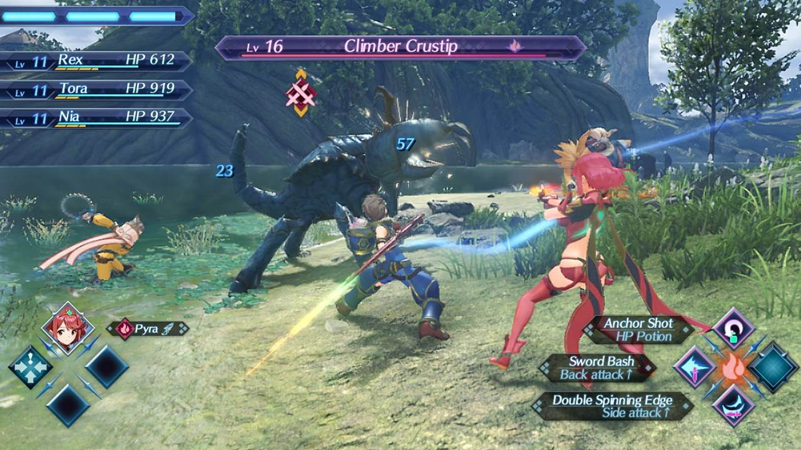

Willkommen zu unserer Website über das Spiel Xenoblade Chronicles 2!
Xenoblade Chronicles 2 ist Teil der Xeno-Serie und dient als Fortsetzung von Xenoblade Chronicles. Es wurde weltweit zeitgleich am 1. Dezember 2017 veröffentlicht.

Xenoblade Chronicles 2 ist ein JRPG Game, welches nur für die Nintendo Switch erhältlich ist. In Xenoblade Chronicles 2 gibt es sogenannte "Driver" oder in deutsch "Meister". Ein Meister is dann in der Lage eine Klinge aus einem "Kernkristall" zu ziehen. Außerdem kann man viele verschiedene Titanen erforschen. Der Rücken der Titanen bietet jeweils eine aufregende Open World Welt. In dieser Welt gibt es feindliche Monster, Schätze und spannende Nebenquests.